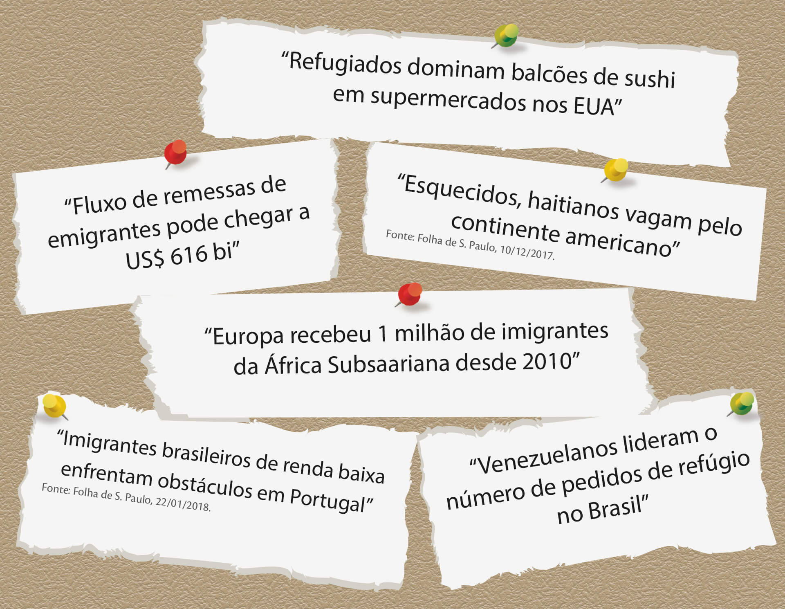
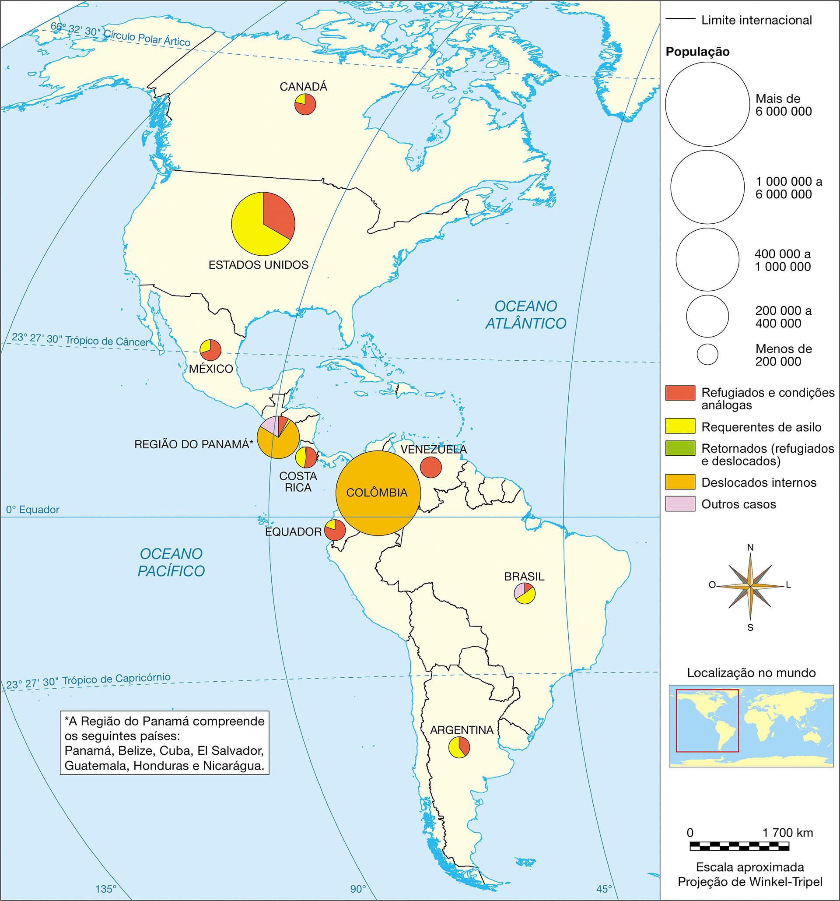
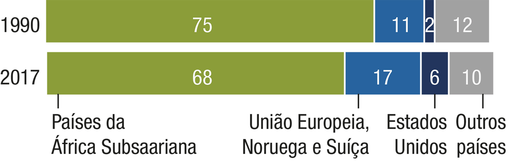
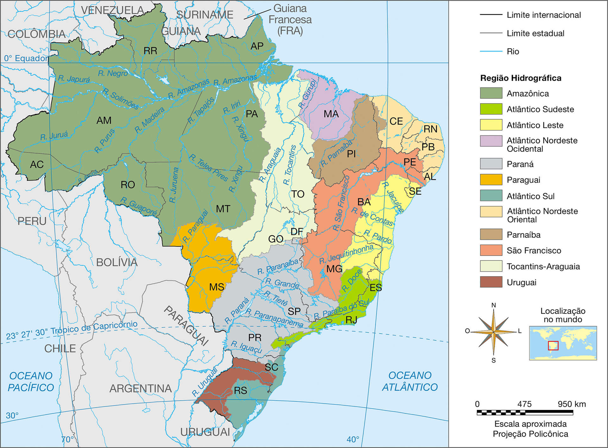
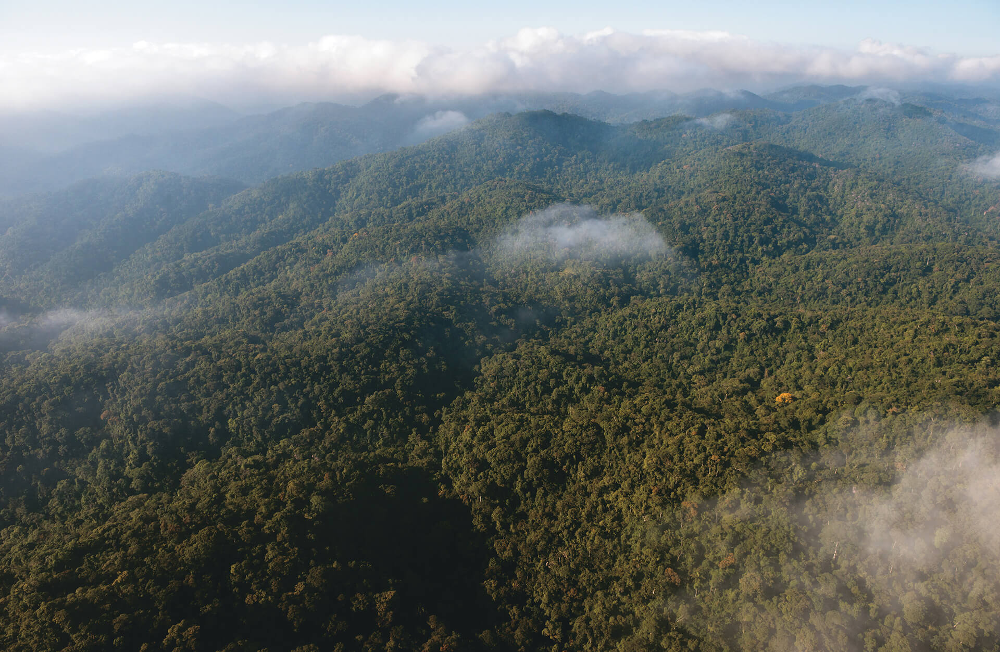
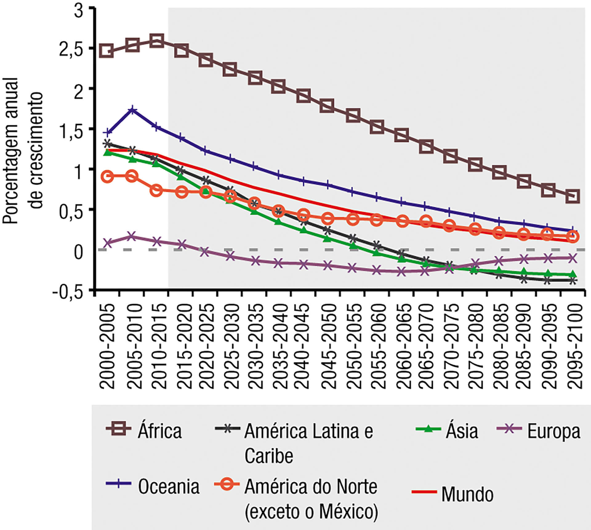

Unidade 03
Deslocamentos populacionais na América e na África

Divo. Digital. 2001.
Introdução
As manchetes acima se relacionam a deslocamentos das populações africanas e americanas. A esse respeito, faça o que se pede:
Você conhece algum cidadão de outro país morando no Brasil? E brasileiro que more ou já tenha morado no exterior? Faça uma pesquisa com seus conhecidos e familiares e registre ao menos um exemplo de cada caso.
Qual ou quais motivos levaram essas pessoas a migrar? Trabalho, estudos, acompanhar a família ou outro?
Exponha para a turma suas respostas e anote as dos colegas. Quais foram os países (de origem e de destino) e os motivos mais citados pela turma?
Objetivos
Compreender a inserção das populações americanas e africanas no contexto das migrações internacionais contemporâneas.
Reconhecer os principais fluxos populacionais da América e da África e como eles se relacionam com o Brasil.
Analisar os principais fatores e as consequências da migração internacional, tanto para países emissores quanto para os que hospedam grupos migratórios internacionais.
No primeiro capítulo deste livro, quando estudamos a trajetória da humanidade sobre o globo terrestre (de acordo com as teorias atuais de maior aceitação no meio científico), aprendemos que a migração faz parte da vida dos seres
humanos desde o princípio da espécie. No decorrer de milênios, os deslocamentos populacionais de grupos humanos levaram o Homo sapiens a se espalhar pelos cinco continentes habitados do globo – e, atualmente, até mesmo ao
ambiente inóspito (hostil à vida) da Antártica, onde profissionais ligados às atividades científicas permanecem por períodos mais ou menos longos nas estações de pesquisa de seus países. Após a dispersão da espécie, as muitas sociedades
que se formaram mundo afora passaram a se fixar permanentemente e a se organizar em Estados.
Agora, dando continuidade aos estudos das populações americanas e africanas, que iniciamos no segundo capítulo, vamos compreender como se configuram os atuais deslocamentos humanos pelo globo, a migração, em especial no que diz
respeito aos países da América e da África.
América e África no contexto das migrações contemporâneas
Migrantes são todas as pessoas que vivem em lugares diferentes daqueles em que nasceram. Já os migrantes internacionais são as pessoas que vivem em países distintos daqueles onde nasceram. Por viverem em países onde são estrangeiros,
são denominados, nesses locais, imigrantes, enquanto no país de origem são considerados emigrantes.
Estima-se que, em 2015, havia pouco menos de 250 milhões de pessoas vivendo como migrantes internacionais, o que significa, em termos proporcionais, quase 3,3% da população mundial. Se considerarmos que, em 1960, eram cerca de 79
milhões de migrantes, perfazendo perto de 2,6% da população mundial da época, de cerca de 3 bilhões de pessoas, podemos perceber que há um lento, porém consistente, crescimento da proporção de migrantes no mundo nas últimas décadas.
Observe as tabelas a seguir com atenção. Elas mostram os 10 países que apresentaram maior crescimento na quantidade de emigrantes enviados mundo afora entre 2010 e 2017, e os 10 maiores receptores de migrantes internacionais no ano de
2015.
Países com maior aumento no número de emigrantes
Países com maior número de imigrantes – 2015
Estados Unidos
46 630 000
Alemanha
12 010 000
Rússia
11 600 000
Arábia Saudita
10 190 000
Reino Unido
8 540 000
Emirados Árabes Unidos
8 100 000
Canadá
7 840 000
França
7 780 000
Austrália
6 760 000
Espanha
5 850 000
Fonte: PEW RESEARCH INSTITUTE. Disponível em: <http://www.pewglobal.org/interactives/migration-tables/> e
<http://www.pewresearch.org/fact-tank/2018/02/28/international-migration-from-sub-saharan-africa-has-grown-dramatically-since-2010/>. Acesso em: 25 abr. 2018.
Atividades
Localize em um planisfério os 10 países que apresentaram maior crescimento no número de emigrantes entre 2010 e 2017. Em quais continentes eles se localizam?
Localize os 10 países que hospedavam maior quantidade de migrantes internacionais em 2015 no planisfério da regionalização do espaço mundial. Em quais regiões eles se localizam?
Regionalização do espaço mundial – ONU
Marilu de Souza
Fonte: MILLENNIUM Development Indicators: world and regional groupings. Disponível em: <http://mdgs.un.org/unsd/mdg/Host.aspx?Content=Data/RegionalGroupings.htm>. Acesso em: 13 mar. 2018. Adaptação.
A análise que você realizou nos planisférios para responder às questões anteriores revela uma forte relação existente entre duas das regiões do mundo estipuladas pela ONU. Quais regiões são essas e que relação você pôde perceber
entre elas?
Como é possível notar, houve crescimento muito intenso no número de emigrantes provenientes da Síria, país asiático localizado na região do Oriente Médio, que viu a diáspora de seus cidadãos
mais que quintuplicar entre 2010 e 2017. Isso pode ser explicado pela guerra civil que tomou conta desse país em 2011 e se prolongou por todo o restante do período considerado na estatística,
que vai de 2010 até 2017. Houve participação de potências militares estrangeiras, como Estados Unidos, Turquia e Arábia Saudita, entre outros, que deram apoio a grupos rebeldes; e Rússia, Irã e o grupo libanês Hezbollah, que apoiaram o
governo sírio. Todos os demais países que apresentaram intenso crescimento no número de emigrantes têm em comum o fato de serem africanos.
diáspora: dispersão de grandes massas de pessoas de determinada população ou povo por várias regiões distintas, normalmente forçada por problemas sociais no local de partida.
Chamamos de guerra civil os conflitos armados que ocorrem entre diferentes facções da população de um país, normalmente uma delas sendo apoiada pelo governo, e a outra, por grupos rebeldes. Muitas vezes os grupos
divergentes contam com apoio de potências militares estrangeiras, que fornecem armas, munição e informações para planejamento de ações.
Apesar de o caso sírio e de outros conflitos civis gerarem muitos emigrantes mundo afora, o sentido predominante nas migrações internacionais contemporâneas, partindo dos países em desenvolvimento rumo aos de economia mais
desenvolvida, é fruto principalmente de um aspecto geral da ordem mundial atual: a desigualdade entre os países em termos econômicos e sociais, em especial no que diz respeito às oportunidades de trabalho. A conexão global proporcionada
pelos meios de comunicação ao espalhar informações sobre o mundo inteiro, pelas empresas multinacionais ao distribuir suas mercadorias e filiais por diversos países e pelo mercado financeiro ao possibilitar a realização de investimentos
internacionais de grandes capitais de forma quase instantânea contribui para aumentar a consciência das desigualdades globais. Da mesma maneira, alimenta os anseios dos mais pobres pelas oportunidades existentes em países mais prósperos
economicamente ou estáveis politicamente.
Jovens marroquinos barrados na Grécia, em 2016, quando tentavam migrar para a França, onde encontrariam com parentes já estabelecidos no país
Getty Images/NurPhoto/Michaud Gae
As razões do predomínio de países africanos entre os que têm aumentado o fluxo de emigrantes são diversas e se alteram de país para país. Elas podem variar desde a violência gerada por conflitos civis, terrorismo e pobreza, até a busca
de oportunidades de empregos por aqueles que têm condições de deixar o país voluntariamente, em geral membros das classes médias.
Para compreender melhor como se configuram as diferentes situações que os migrantes vivem e enfrentam em suas jornadas, vamos compreender como se definem algumas das principais categorias de migrantes.
Conexões
Migrantes: refugiados, deslocados, requerentes de asilo e asilados políticos
As migrações internacionais são um aspecto do mundo contemporâneo que tem chamado bastante atenção nos debates internacionais, uma vez que envolve a interação entre populações de diferentes países e afeta o conjunto das relações
internacionais.
A maioria das pessoas e famílias que migram para outros países o faz por conta de oportunidades de trabalho ou estudo, laços familiares, casamentos e outros fatores que caracterizam um deslocamento voluntário por parte dos migrantes.
Estes pertencem, em geral, a grupos sociais de renda média e são relativamente qualificados em termos profissionais, isto é, com níveis de educação melhores que a maior parcela da população.
Alguns migrantes, contudo, são deslocados forçadamente de seus locais de origem ou de moradia e, embora componham a parcela minoritária da população migrante mundial, chamam atenção por causa das condições precárias. Estes são
considerados refugiados. Trata-se dos mais de 22 milhões de indivíduos que atravessam fronteiras internacionais em condições forçadas por perseguição, conflitos, violência ou violações dos direitos humanos. Já quando se trata dos mais
de 40 milhões que se deslocam pelos mesmos motivos e condições, mas não chegam a deixar o país onde vivem, são considerados deslocados internos. Há ainda quase 3 milhões de requerentes de asilo para refugiados, que são aqueles que
fizeram a solicitação do status de refugiados para organismos internacionais e aguardam resposta. Somados, os refugiados, os deslocados internos e os requerentes de asilo totalizam mais de 65 milhões de pessoas em situação precária de
deslocamento forçado, dentro ou fora de seus países, ao redor do globo, como é possível verificar no gráfico abaixo.
Fonte: UNITED NATIONS. Global trends: forced displacement in 2016. Disponível em: <http://www.unhcr.org/5943e8a34.pdf>. Acesso em: 12 abr. 2018.
Uma quarta categoria de pessoas deslocadas à revelia de suas vontades são os asilados políticos. Estes são em bem menor número, geralmente casos individuais de pessoas que alegam perseguição política, quase sempre por parte de
governos, e solicitam acolhimento de outro país, que deve ser aceito diretamente pelo presidente ou chefe do poder executivo. Observe o quadro para compreender melhor.
Categoria
Definição
Quantidade
Refugiados
Aqueles que fogem de seu país, geralmente em grupos, alegando temores fundados de perseguição por conta de crises humanitárias (violência, miséria, racismo) em seu local de origem, para o qual não podem ou não querem
retornar.
22,5 milhões (2016)
Deslocados internos
São os que fogem pelas mesmas razões e condições que os refugiados, porém permanecem dentro de seus países.
40,3 milhões (2016)
Requerentes de asilo
São os que fizeram, por intermédio da ONU, solicitação para receber o status de refugiados e aguardam a resposta.
2,8 milhões (2016)
Asilados políticos
Sem intermédio da ONU, solicitam asilo diretamente ao líder político máximo de outro país, alegando perseguição, geralmente por parte de seu governo.
Não contabilizado
Ao fundo, campo de refugiados em Mogadíscio, Somália, 2013
O continente americano apresenta considerável população de migrantes internacionais, em que se destaca o fluxo de latino-americanos para países europeus e, principalmente, para os Estados Unidos, lar da maior população de imigrantes do
mundo: 46,6 milhões de seus habitantes são estrangeiros. Entre os países que contam com maior número de seus cidadãos emigrados, ressalta-se o México como o segundo maior emissor mundial, com 12,3 milhões de emigrantes, atrás apenas da
Índia, com 15,6 milhões, segundo dados de 2016.
Embora a maioria disparada dos emigrantes mexicanos viva nos Estados Unidos, desde a crise econômica que atingiu esse último em 2008 e se espalhou pelo mundo no ano seguinte, o número de mexicanos retornando tem superado o dos que
emigram. Apesar disso, a fronteira entre os dois países permanece um dos maiores corredores migratórios mundiais, não mais tanto de mexicanos, mas predominantemente de El Salvador, Honduras e Guatemala, países cujos emigrantes em geral
são marcados pela violência gerada por gangues ligadas ao crime organizado.
Como é possível perceber no mapa ao lado, a Colômbia se destaca pela enorme quantidade de deslocados internos em razão da guerra civil no país, onde grupos guerrilheiros, milícias contrárias e o governo se enfrentam há mais de 50 anos.
Em 2016, contudo, o principal grupo, as Forças Armadas Revolucionárias da Colômbia (FARC), assinou um tratado de paz e desde então a violência no país tem diminuído, ao contrário do que ocorre em países da América Central. O quadro de
refugiados, solicitantes de asilo e retornados no continente não é tão grave como na África, que veremos em breve, entretanto também apresenta situações preocupantes. A esse respeito, observe o mapa.
América: deslocamentos forçados em 2016

Talita Kathy Bora
Fonte: UNITED NATIONS. Global focus: UNHCR operations worldwide. Disponível em: <http://reporting.unhcr.org/operations>. Acesso em: 16 ago. 2018. Adaptação.
Migrações internacionais e o Brasil
Com uma nova lei de imigração aprovada em 2017, o Brasil tem na atualidade uma abordagem humanitária e relativamente aberta a estrangeiros residentes no país. Porém, ao contrário do que ocorreu em boa parte do passado nacional, hoje há
apenas uma pequena proporção de imigrantes entre os brasileiros, cerca de 750 mil pessoas em 2017, o que configura por volta de 0,3% da população. Uma proporção baixa, ainda mais se comparada a outros países americanos, como os Estados
Unidos, onde quase 15% da população é composta de imigrantes, ou o Canadá, que conta com cerca de 22% de imigrantes entre os habitantes do país. Conforme dados de 2015, cerca de 65% dos imigrantes no Brasil estão concentrados nos
grandes e nos médios centros urbanos da Região Sudeste, que abrange cerca de 40% da população brasileira como um todo. Em comparação à população do país, os imigrantes apresentam-se em geral mais jovens e qualificados, já que cerca de
33%, ou um terço, têm ensino superior, aproximadamente o dobro da média nacional.
No que diz respeito ao acolhimento de refugiados, o Brasil passou por grande aumento no número de solicitações entre 2010 e 2015, observado também no mundo como um todo, e acolheu nesse período pessoas de 79 nacionalidades diferentes.
O Haiti era, disparadamente, o principal solicitante, respondendo por bem mais da metade dos casos, por conta da situação de instabilidade política pela qual passava o país desde 2004 e, em especial, do agravamento das condições após um
forte terremoto em 2010. Como o Brasil liderou uma missão de paz da ONU no Haiti e prestou serviços de ajuda, passou a ser visto como destino viável para os emigrantes haitianos. Estes, na maior parte das vezes, entravam pelo Estado do
Acre, no Norte, e se dirigiam para cidades da Região Sul do país.
Empresas brasileiras contratam trabalhadores haitianos em São Paulo, SP, 2015
Fotoarena/Antonio Cicero
A partir de 2016, as migrações haitianas começaram a diminuir e outra onda de migração teve início, desta vez proveniente da Venezuela por meio da fronteira norte do país em Roraima, mais especificamente na cidade de Pacaraima. Fugindo
da grave crise econômica e política venezuelana, milhares de famílias se mudaram para cidades de Roraima, em especial a capital estadual, Boa Vista. Diferentemente dos haitianos, contudo, os venezuelanos, de modo geral, apresentam pouca
propensão a se aventurarem no interior do país, pois preferem ficar próximo da fronteira para voltarem quando houver condições.
Essas ondas migratórias de refugiados e solicitantes de asilo se mostraram um grande desafio para o Brasil, em especial a partir de 2014, quando se iniciou uma recessão econômica que se estendeu até 2017. Como forma de lidar com a
grande demanda de refúgios, foi criado um tipo especial de acolhimento, existente somente no Brasil, denominado visto humanitário. Essa prática facilita a entrada de pessoas em condições de vulnerabilidade, porém sofre críticas por
substituir o reconhecimento da condição de refugiado a que muitos desses migrantes teriam direito.
Por fim, há também os brasileiros que emigram pelo mundo afora, estimados em pouco mais de 3 milhões de pessoas. Destes, quase a metade vive nos Estados Unidos, e outra grande parte no Paraguai e em países europeus, com destaque para
Portugal e Reino Unido. Agora, observe o planisfério dos emigrantes brasileiros.
O Brasil apresenta maior número de refugiados ou requerentes de asilo à espera de resposta?
Explique por que os Estados Unidos e o Canadá são os países americanos mais procurados por solicitantes de refúgio e também os que abrigam maior quantidade de imigrantes.
Qual país asiático tem maior número de brasileiros em seu território? Faça uma pesquisa na internet e explique, citando pelo menos dois motivos, por que há tantos brasileiros nesse país atualmente.
Migrantes venezuelanos em fila para vacinação em Boa Vista, RR, 2018
Futura Press/Edmar Barros
Migrantes africanos
Observe o mapa desta página com atenção e, em seguida, compare-o ao mapa com mesmo tema, mas focado no continente americano, na página 9. A visualização e a contraposição dos mapas revelam a disparidade geral entre as situações sociais
predominantes em cada continente. À exceção dos deslocados internos colombianos, ainda que os países americanos exibam diferentes casos de gravidade incontestável, os países africanos, além de mais numerosos, revelam estatísticas ainda
mais alarmantes. A situação precária de vida observada nos campos de refugiados que se espalham em vários países do continente explicita tristemente essa disparidade.
Esse contexto não é uma novidade no continente africano, onde desde a década de 1970 inúmeros conflitos étnicos e políticos deram origem a fluxos mais ou menos contínuos de refugiados, deslocados internos e migrantes em busca de
oportunidades de emprego e estudo. Embora a maioria absoluta dos que migram permaneça dentro dos limites do continente mesmo quando deixa o país, o fluxo dos que se dirigem aos Estados Unidos e, principalmente, à Europa, tem chamado
atenção do mundo, uma vez que ocasiona problemas também naquele continente, onde a xenofobia, ou a aversão a estrangeiros, tem aumentado, entre outras reações preocupantes, conforme veremos mais adiante.
África – deslocamentos forçados em 2016
Talita Kathy Bora
Fontes: UNITED NATIONS. Global report 2016. Disponível em: <http://reporting.unhcr.org/sites/default/files/gr2016/pdf/Book_GR_2016_ENGLISH_complete.pdf>; Global focus – UNHCR Operations worldwide. Disponível em:
<http://reporting.unhcr.org/operations>. Acesso em: 16 ago. 2018. Adaptação.
Os imigrantes provenientes do norte da África na Europa eram 3 milhões em 1990 e 5,2 milhões em 2017. Já os imigrantes provenientes da África Subsaariana, como podemos ver no gráfico a seguir, tiveram um acréscimo ainda maior naquele
continente e também em outros.
Destinos de emigrantes da África Subsaariana em 1990 e em 2017 (%)

Fonte: PEW RESEARCH INSTITUTE. Disponível em: <http://www.pewresearch.org/fact-tank/2018/02/28/international-migration-from-sub-saharan-africa-has-grown-dramatically-since-2010/>. Acesso em: 12 abr. 2018.
Jovem mulher refugiada carrega galão de água no campo de Dadaab, Somália, 2015
Urbanização na África
O surgimento das cidades no continente africano é muito anterior ao processo de colonização, por vezes datando de milênios atrás. Entretanto, a maior parte das cidades africanas atuais surgiu durante ou após o Período Colonial.
Atualmente, o continente é o que exibe as menores proporções de pessoas vivendo em cidades, porém, ao mesmo tempo, é onde ocorre o processo continental mais intenso de urbanização: entre 1995 e 2015, a população urbana do continente
cresceu a uma taxa anual próximo de 3,5%, muito mais alta que nos demais continentes, e responde por boa parte dos fluxos populacionais africanos.
O surgimento das cidades no continente africano é muito anterior ao processo de colonização, por vezes datando de milênios atrás. Entretanto, a maior parte das cidades africanas atuais surgiu durante ou após o Período Colonial.
Atualmente, o continente é o que exibe as menores proporções de pessoas vivendo em cidades, porém, ao mesmo tempo, é onde ocorre o processo continental mais intenso de urbanização: entre 1995 e 2015, a população urbana do continente
cresceu a uma taxa anual próximo de 3,5%, muito mais alta que nos demais continentes, e responde por boa parte dos fluxos populacionais africanos.
Africanos em favelas (%) – 1990 a 2014

Fonte: UNITED NATIONS. World cities report 2016: urbanization and development – emerging futures. Disponível em: <http://wcr.unhabitat.org/main-report/>. Acesso em: 16 ago. 2018.
África: população urbana – 2016
Marilu de Souza
Fonte: UNITED NATIONS. World cities report 2016: urbanization and development – emerging futures. Disponível em: <http://wcr.unhabitat.org/main-report/>. Acesso em: 12 abr. 2018. Adaptação.
Como é possível verificar no mapa e no gráfico da página anterior, nos países africanos as favelas têm diminuído em proporção da população geral, mas boa parte desta ainda vive em áreas rurais. Isso, somado à ausência de uma economia
efetivamente industrial, evidencia outra peculiaridade da urbanização africana: a manutenção de vínculos econômicos e laços sociais com o campo. Nos centros menores, a conexão com a vida rural ainda é forte e muitos dos habitantes
seguem suas atividades como agricultores.
Olhar geográfico
Observe o mapa a seguir, que representa as consequências do longo conflito que tem deslocado muitas pessoas no mais novo país do mundo a ser reconhecido pela ONU: o Sudão do Sul. Tendo este país se tornado independente do vizinho ao
norte, o Sudão, em 2011, foi deflagrada uma guerra civil em 2013 e, desde então, até 2016, havia gerado 3 milhões e 300 mil deslocados à força para outras áreas do país ou para países vizinhos, sendo a maioria composta de crianças e
mulheres provenientes das zonas rurais.
Sudão do Sul: refugiados e deslocados internos (2016)
Talita Kathy Bora
Fonte: UNITED NATIONS. Global trends: forced displacement in 2016. Disponível em: <http://www.unhcr.org/5943e8a34.pdf>. Acesso em: 12 abr. 2018. Adaptação.
Escreva um parágrafo explicitando sua interpretação das informações do mapa: quantidade de pessoas de cada categoria de deslocados e para cada região ou país representado, localização dos campos e centros de refugiados.
Migrantes americanos e africanos: consequências de suas chegadas e saídas
Os fluxos migratórios de americanos e africanos correspondem à parcela significativa das migrações internacionais mundiais. O continente africano praticamente inteiro e as regiões da América Latina e Caribe, no continente americano,
estão entre as que mais enviam fluxos de migrantes internacionais, seja entre países da própria região ou continente, seja para países mais distantes.
Em 2017, mais de 36 milhões de africanos saíram de seus países. Destes, quase 20 milhões permaneceram nos limites do continente, cerca de 10 milhões foram à Europa, mais de 4 milhões, à Ásia e mais de 2 milhões, aos Estados Unidos ou
ao Canadá; além disso, pouco mais de meio milhão de africanos foi para países da Oceania e menos de 60 mil se deslocaram à América Latina ou Caribe. Por outro lado, quase 3 milhões de pessoas vieram de outros continentes para morar em
países africanos e pouco menos de 3 milhões são de origem desconhecida (isto é, podem ser do próprio ou de outro continente).
Na América Latina e no Caribe, por sua vez, mais de 37 milhões de pessoas saíram de seus países em 2017. Destas, cerca de 6 milhões delas permaneceram na região, por volta de 26 milhões foram para os Estados Unidos ou o Canadá e outros
4 milhões e meio rumaram para países europeus; somados, menos de meio milhão de latino-americanos migrou para países asiáticos, africanos ou da Oceania. Por outro lado, quase 10 milhões chegaram de outros continentes ou da América do
Norte.
Já os países de economia altamente desenvolvida e que apresentam maiores níveis de IDH nesses continentes, o Canadá e os Estados Unidos, estão entre os maiores receptores mundiais de migrantes de outros países, seja em relação à
quantidade de indivíduos que abrigam, seja em relação à presença de migrantes internacionais como proporção da população geral. Em 2017, saíram pouco mais de 4 milhões de migrantes de tais países; destes, pouco menos de um terço trocou
um pelo outro. No mesmo período, mais de 55 milhões de pessoas chegaram de outros continentes, quase a metade delas provenientes da América Latina e do Caribe, e mais de um quarto da Ásia. Da África, chegaram mais de 2 milhões e 500 mil
migrantes, quantidade pouco maior que a de migrantes de origem desconhecida. Observe o gráfico a seguir para compreender melhor.
Fluxo intercontinental de migrantes internacionais em 2017*
Fonte: UNITED NATIONS. Population division. International migration. Disponível em: <http://www.un.org/en/development/desa/population/migration/data/estimates2/estimatesgraphs.shtml?0g0>. Acesso em: 12 abr.
2018.
Todos esses fluxos migratórios tão diversificados e que se cruzam com constância acabam por provocar diversas consequências, como não poderia deixar de ser, tanto para os países receptores quanto para os emissores. Para finalizar nossa
análise das migrações de populações americanas e africanas, vejamos dois aspectos que se destacam no debate mundial sobre os efeitos positivos e negativos das migrações internacionais.
Qualificação de mão de obra e mercado de trabalho
Um dos aspectos da vida social de uma população que recebe ou emite migrantes internacionais são os efeitos sentidos no mercado de trabalho. Nos países da América Latina e do Caribe, assim como nos países africanos, é comum que a
emigração de jovens formados com ensino superior para países de economia desenvolvida configure, em alguma medida, o fenômeno denominado “fuga de cérebros”: a saída da mão de obra qualificada para buscar oportunidades em outros países.
Por sua vez, os países receptores obtêm ampla vantagem, pois não investiram na qualificação dos migrantes, cujos custos foram bancados por suas famílias ou países (quando formados em sistemas públicos de educação).
Nos Estados Unidos e no Canadá, a chegada constante de imigrantes latino-americanos, caribenhos ou, em quantidade bem menor, africanos, tem aspectos ambíguos. Estudos estatísticos e econômicos são quase unânimes em apontar que os
migrantes melhoram de vida e seus descendentes alcançam um padrão de vida e nível de renda superior ao de quando chegaram. Portanto, contribuem para o crescimento econômico do país, da mesma forma que o conjunto das populações desses
países, que apresentam a mesma tendência à produção ampliada de riqueza entre uma geração e outra.
Família de imigrantes somalis no Canadá, 2010
Getty Images/Toronto Star/Ron Bull
Entretanto, os migrantes muitas vezes ocupam postos de trabalho de menor qualificação que aqueles que ocupavam em seu país de origem. Por um lado, isso pode aumentar a produtividade e suprir a demanda por funções que os habitantes
nativos dos países mais desenvolvidos economicamente dificilmente querem exercer. Além disso, ameniza o processo de envelhecimento das populações desses países, em especial nos Estados Unidos. Por conta do intenso fluxo migratório, esse
país apresenta, diferentemente da maioria dos Estados europeus, grande reposição da força de trabalho, ainda que as taxas de natalidade não sejam significativamente maiores.
Por outro lado, questões como diferenças culturais, dificuldade de aprendizagem do idioma e até mesmo a difusão de ideologias xenófobas ou racistas têm gerado problemas preocupantes para os emigrantes de países latino-americanos,
caribenhos e africanos. Na Europa, alguns países têm adotado políticas restritivas, que acabam por impedir a reunião de famílias imigrantes com os membros que migraram depois. Nos Estados Unidos também se observam problemas de xenofobia
e preconceito; entretanto, como mostra o gráfico a seguir, a visão dos habitantes sobre os imigrantes no país melhorou entre 1994 e 2016.
Visão dos estadunidenses sobre os imigrantes no país
Fonte: PEW RESEARCH INSTITUTE. Disponível em: <http://www.pewresearch.org/fact-tank/2016/12/15/international-migration-key-findings-from-the-u-s-europe-and-the-world/>. Acesso em: 13 abr. 2018.
Remessas financeiras
Outro aspecto de grande importância e impacto econômico no contexto global, relativo às migrações internacionais, são as remessas financeiras para familiares no país de origem, que têm adquirido importância cada vez maior. Embora
estejam em franca ascensão desde a década de 1990 até 2014, houve redução em 2015 e 2016 no mundo como um todo, voltando a crescer no ano seguinte. Como mostra o gráfico ao lado, na América Latina e no Caribe, contudo, o fluxo seguiu
sempre crescente nos últimos anos, proveniente principalmente dos Estados Unidos.
O valor total dessas remessas no ano em questão, de 574 bilhões de dólares, é três vezes maior que as ajudas oficiais ao desenvolvimento registradas pelo Banco Mundial e constitui fonte de recursos mais estável que outros tipos de
fluxo de capital externo, como investimentos privados e programas de ajuda.
As evidências de impactos dessas remessas sobre as economias mais desenvolvidas, de onde sai a maior parte desse fluxo, são escassas e, de modo geral, sugerem impactos pouco expressivos no crescimento econômico, seja positivamente,
seja negativamente.
Variação nas remessas financeiras por continente ou região em 2016

Fonte: PEW RESEARCH INSTITUTE. Disponível em: <http://www.pewresearch.org/fact-tank/2018/01/29/remittances-from-abroad-are-major-economic-assets-for-some-developing-countries/>. Acesso em: 2 maio 2018.
Como mostra este mapa, alguns países americanos e africanos têm nas remessas financeiras de seus emigrantes um recurso econômico de grande importância para o PIB nacional.
Remessas financeiras em proporção do PIB – 2016

Talita Kathy Bora
Fonte: PEW RESEARCH INSTITUTE. Disponível em: <http://www.pewresearch.org/fact-tank/2018/01/23/migrants-from-latin-america-and-the-caribbean-sent-a-record-amount-of-money-to-their-home-countries-in-2016/>. Acesso em: 16
ago. 2018. Adaptação.
Organize as ideias
Preencha os quadros a seguir com palavras-chave que associem as consequências com os fatos envolvidos.